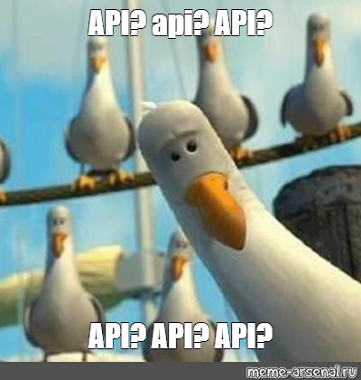

What is an API?
API stands for Application Programming Interface.It is a set of programming code/URLs that enables data transmission between one software product and another. It also contains the terms of this data exchange. We are going to cover an example of using an API in python to get data and store it in a dataframe, as an example for collecting data for projects. APIs usually have a documentation page to explain how to interact with it.

First, we are going to start with importing needed packages...
import requests
import pandas as pd
import json
JSON or JavaScript Object Notation is a minimal, readable format for structuring data. It is used primarily to transmit data between a server and web application. Most web APIs provide data in JSON for easy read.
Now, We are going to use requests to query the API. We are going to use the OpenNotify API's ISS Pass endpoint that returns when the ISS will next pass over a given location on earth. But first will test it with a request for the current location of the ISS.
requests.get("http://api.open-notify.org/iss-now.json")
<Response [200]>
Response 200 is a good sign, this means our request worked. Next we are going to add the paramters for Toronto to get when the ISS is going to pass over. We can do this by adding an optional keyword argument, params, to our request. In this case, there are two parameters we need to pass:
lat — The latitude of the location we want. lon — The longitude of the location we want.
We can do this by adding the query parameters to the url, like this:
requests.get('http://api.open-notify.org/iss-pass.json?lat=43.653225&lon=79.383186')
<Response [200]>
We can also make a dictionary with these parameters, and then pass them into the requests.get function.
It’s almost always preferable to setup the parameters as a dictionary, because requests takes care of some things that come up, like properly formatting the query parameters.
We are going to do that and store our response for later use.
params = {"lat": 43.653225, "lon": -79.383186}
response = requests.get(url="http://api.open-notify.org/iss-pass.json", params=params)
response.content
b'{\n "message": "success", \n "request": {\n "altitude": 100, \n "datetime": 1564663440, \n "latitude": 43.653225, \n "longitude": -79.383186, \n "passes": 5\n }, \n "response": [\n {\n "duration": 506, \n "risetime": 1564685872\n }, \n {\n "duration": 651, \n "risetime": 1564691567\n }, \n {\n "duration": 627, \n "risetime": 1564697394\n }, \n {\n "duration": 607, \n "risetime": 1564703249\n }, \n {\n "duration": 642, \n "risetime": 1564709068\n }\n ]\n}\n'
response.headers
{'Server': 'nginx/1.10.3', 'Date': 'Thu, 01 Aug 2019 13:30:47 GMT', 'Content-Type': 'application/json', 'Content-Length': '528', 'Connection': 'keep-alive', 'Via': '1.1 vegur'}
As we can see the content is hard to read, this is where JSON helps. As we can see below the response is in a dictionary form with the full list of paramters and the data requested.
response.json()
{'message': 'success',
'request': {'altitude': 100,
'datetime': 1564663440,
'latitude': 43.653225,
'longitude': -79.383186,
'passes': 5},
'response': [{'duration': 506, 'risetime': 1564685872},
{'duration': 651, 'risetime': 1564691567},
{'duration': 627, 'risetime': 1564697394},
{'duration': 607, 'risetime': 1564703249},
{'duration': 642, 'risetime': 1564709068}]}
Finally, we are going to take the part with the needed information and store it as a dataframe to a csv file.
response.json()['response']
[{'duration': 506, 'risetime': 1564685872},
{'duration': 651, 'risetime': 1564691567},
{'duration': 627, 'risetime': 1564697394},
{'duration': 607, 'risetime': 1564703249},
{'duration': 642, 'risetime': 1564709068}]
pd.DataFrame(response.json()['response'])
| duration | risetime | |
|---|---|---|
| 0 | 506 | 1564685872 |
| 1 | 651 | 1564691567 |
| 2 | 627 | 1564697394 |
| 3 | 607 | 1564703249 |
| 4 | 642 | 1564709068 |
upcoming = pd.DataFrame(response.json()['response'])
upcoming.to_csv('ISS.csv')